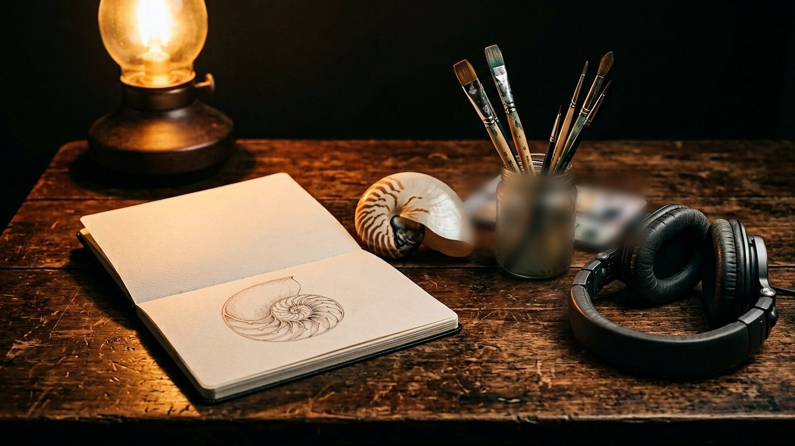

Accueil → Crédits et mentions
Crédits et mentions
Qui a fait quoi, quelles données sont conservées (presque aucune), et les informations légales du musée.

Qui a fait quoi
Crédits
- Conception, recherche et rédaction
- CREATIO.
- Images
- Reconstitutions numériques générées par intelligence artificielle, puis inspectées une à une et parfois retouchées (flou de profondeur) ; toutes au format JPG. Aucune ne doit être prise pour une photographie scientifique.
- Voix de l'audioguide
- Voix de synthèse en français ; transcriptions intégrales publiées avec chaque piste.
- Données scientifiques
- Les auteurs des travaux cités, listés dans Méthode et sources.
- Textes bibliques
- Traductions personnelles fidèles ou versions du domaine public.
- Polices de caractères
- Polices déjà présentes sur votre appareil : aucune police n'est téléchargée.
- Code
- Écrit pour le musée, sans bibliothèque ni service extérieur.
Vos données
Vie privée
Le musée n'utilise aucun cookie, aucun traceur, aucune mesure d'audience et aucun service extérieur : toutes les ressources sont enregistrées sur le site lui-même. Un seul réglage est mémorisé, sur votre appareil uniquement : votre choix d'affichage en contraste renforcé. Il n'est jamais transmis. Pour la visite hors connexion, votre navigateur garde une copie des pages, des images et des pistes audio ; vous pouvez l'effacer à tout moment depuis les réglages du navigateur.
Informations légales
Mentions
Les informations sur l'éditeur et l'hébergeur du site seront publiées lors de la mise en ligne définitive. Les textes et visuels du musée sont proposés à des fins éducatives ; les travaux scientifiques cités restent la propriété de leurs auteurs et éditeurs.